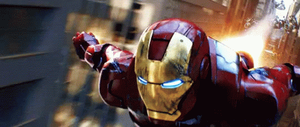

From Simple English Wikipedia, the free encyclopedia
 This article does not have any sources. You can help Wikipedia by finding good sources, and adding them. (December 2020)
This article does not have any sources. You can help Wikipedia by finding good sources, and adding them. (December 2020)
This article is about the character from Marvel Comics. For the character from the Marvel Cinematic Universe, see Tony Stark (Marvel Cinematic Universe). For other uses, see Iron Man (disambiguation).
Iron Man is a fictional superhero who wears a suit of armor. His alter ego is Tony Stark. He was created by Stan Lee, Jack Kirby and Larry Lieber for Marvel Comics in Tales of Suspense #39 in the year 1963[1] and appears in their comic books. He is also one of the main protagonists in the Marvel Cinematic Universe. Iron Man is played by Robert Downey, Jr. in the movies Iron Man, Iron Man 2, The Avengers, Iron Man 3, Avengers: Age of Ultron, Captain America: Civil War, Spider-Man: Homecoming, Avengers: Infinity War and Avengers: Endgame.
In the movies and the earlier comic books, Tony Stark is a human. Outside the suit, he does not have any superpowers, however he is very intelligent. He made the suit himself. Iron Man can fly and shoot beams from his hands using special technology called "repulsors" in his boots and gloves. He is not hurt by most weapons like guns and cannons because of his armor. There are many versions of the Iron Man suit, because Stark keeps making improvements.
In the later comic books, Stark took an experimental virus called "Extremis" which allowed him to control his suit with his mind and summon it wherever he was. Stark would eventually develop an armor that he could store in his body. This armor was known as the "Bleeding Edge Model 37".
Stark inherited a large American company called "Stark Industries" when his father died. He was badly injured by a bomb in an attack planned by people who did not like him running his company. Shrapnel from the explosion was moving towards his heart. This would have killed him, but a scientist called Yinsen who was with him made a magnet for his chest which would keep the shrapnel away. In the movies, he makes an "arc reactor" which is put into his chest to stop the shrapnel.
Yinsen and Stark secretly build a heavy suit of armor which they plan to use to escape. However, during the escape, Yinsen dies so that the kidnappers will be distracted from Stark escaping. Stark escapes safely and goes back to America. He makes a better suit and uses it to fight evil.
Tony Stark is charismatic and eccentric, he is also very proud, but also very altruist and heroic. He did not have a good childhood, and this affects how he acts.
Stark is very smart, and a very talented inventor. His technology is always very advanced, and Iron Man is his greatest piece of work. In both the comics and the movies, he uses the arc reactor (or "repulsor technology") as a form of sustainable energy to help the world.
This page was last edited on 22 November 2023, at 07:21 (UTC). Text is available under the Creative Commons Attribution-ShareAlike License 4.0; additional terms may apply. By using this site, you agree to the Terms of Use and Privacy Policy. Wikipedia® is a registered trademark of the Wikimedia Foundation, Inc., a non-profit organization.